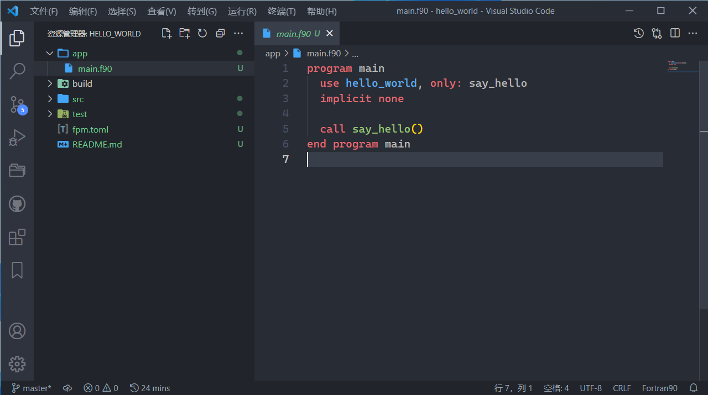
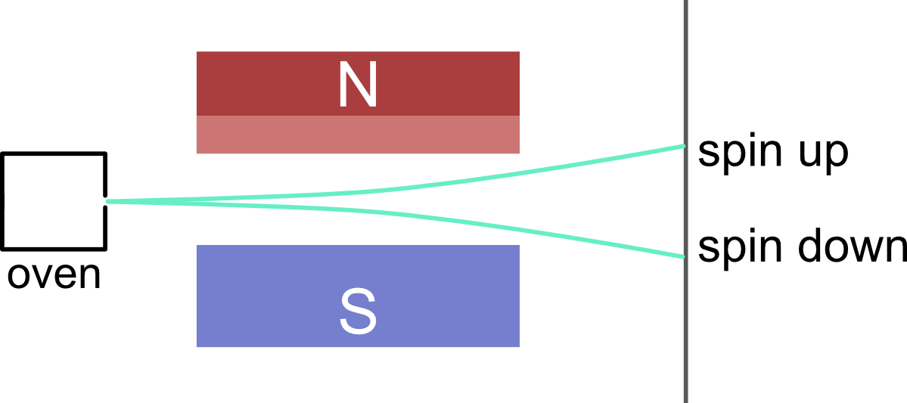

现代Fortran程序设计
作者：Fortran-Fans
序言
欢迎学习和使用Fortran！Fortran是一门主要应用于高性能数值计算与科学计算的程序语言，其特色在于灵活且强大的数组特性、易于编写并行数值算法。
关于Fortran
我们不打算在这里过多介绍Fortran的历史——毕竟你能很容易通过搜索引擎了解到。Fortran是一门「古老」的语言，古老到即使你以前未曾学习过Fortran，也可能听过别人对于古早Fortran代码的吐槽。但是Fortran也是一门「新」语言，因为新的语言标准仍在发布。Fortran的最新标准是Fortran 2018，下一个版本Fortran 202X也正在讨论中。
虽然Fortran属于「通用程序语言」[wikipedia]，但是其主要应用的领域是数值计算。Fortran内置支持创建和使用数组，而且具有积累悠久的数值算法库，使得用户能轻松地编写数值计算程序。作为强类型语言，编译时对过程接口的严格检查，也保证了Fortran程序计算结果的可靠性。此外，Fortran具有良好的并行性，语法标准即支持了Coarray并行。你也可以通过其他并行API（OpenMP、MPI、CUDA Fortran等）编写并行Fortran程序。
Fortran也有一些缺点：Fortran并不适合编写通用性的应用程序。用Fortran编写GUI程序是比较困难的，也缺少对于计算机底层的直接控制。不过Fortran提供了与C语言交互的接口。在实践中，可以使用其他语言构建程序主体，用Fortran编写计算密集的部分，两者之间通过C语言接口传递数据。
在实际开发中，Fortran还有如下的一些问题。Fortran标准只提供了一些内置过程与模块，并没有标准库。对于一些常用但是标准内并未提供的函数，用户可能要么自己编写实现，要么只能去寻找散落在各处的函数库。将代码构建为可执行程序也并非容易的事，尤其是当使用了其他函数库。如果你使用makefile，你可能需要手动维护源代码之间的依赖关系。
2019年，Ondřej Čertík和Milan Curcic等人建立了fortran-lang社区，并开始了Fortran Standard Library（stdlib）、Fortran Package Manager（fpm）等项目的开发。虽然这些项目尚处于早期版本，但我们已经能窥见到它们的强大之处。尤其是fpm，提供了包管理以及项目构建功能。这使得我们能够方便地复用他人的代码，并构建自己的函数库或程序。
我们希望fortran-lang社区的发展与Fortran标准的进一步演化（比如提供泛型功能）能够使Fortran这门语言继续保持其生命力，让我们能使用Fortran继续开发数值计算程序。
关于本书
不得不承认的一点是，早期Fortran的影响力依然存在，不仅是代码遗产，也包括各种资料与书籍。我们编写这本书的一个目的，就是推广现代Fortran的特性以及开发工具。在这本书中，我们不会讲解任何过时的特性，而是着重于那些更为安全、更为友好的语言特性。
此外，我们希望本书并非单纯讲解Fortran的语言特性。我们认为真正重要的是帮助初学者学会编写程序、学会构建程序。因此本书也会简单介绍一些并非Fortran本身，但是编写程序时经常要接触到的概念与知识。需要注意的是，设计与构建程序框架的范式并非唯一，且各有优劣，所以我们无意也无法介绍所有的范式。本书将主要使用模块化的程序设计——这里的「模块」既表示抽象的功能单元，也表示Fortran的一种语言单元module。
为了让初学者们更加贴近开源社区，本书选择gfortran编译器和fpm作为开发工具进行讲解。我们也希望你能够参与开源社区建设。
我们希望本书能教会你基础的Fortran语法，编写出结构化的程序。如果你在学习和编写Fortran中有任何疑问，欢迎加入「Fortran 初学」群（100125753）提出你的问题。
其他Fortran参考资料
- Modern Fortran - Milan Curcic
- Quickstart Fortran Tutorial - fortan-lang
- Fortran程序设计（第四版） - Stephen J. Chapman
安装Fortran开发环境
本教程使用Msys2-GFortran编译器进行Fortran开发，它的优点有：
- 可以生成Windows本地化执行程序；
- 国人更熟悉Windows环境；
- 方便管理和升级；
- 性能很好。
缺点有：
- 运行时更详细的堆栈错误信息缺失；
- 调试不算方便；
- 可能存在配套工具Windows环境不适应的问题。
即使它有如上缺点，但它仍是一款很强的Fortran编译器，且随着用户的使用和MSYS2的进步，它也会越来越好用。
安装MSYS2-GFortran软件
前往MSYS2官网下载安装MSYS2安装包，并阅读相关文档。
这里列出一些有用的部分命令：
pacman -Syu # 升级msys2内部组件和仓库信息
pacman -Ss <package_name> # 搜索软件
pacman -S <package_name> # 安装软件
pacman -Qs <package_name> # 查询本地安装的特定软件
pacman -Rs <package_name> # 卸载软件
pacman -R --help # 查询命令的帮助文档
...
我们可以通过以下命令安装MSYS2-GFortran：
pacman -Ss fortran # 查询名字中含“Fortran”字符的包
pacman -S ucrt64/mingw-w64-ucrt-x86_64-gcc-fortran # 安装ucrt64版本的gfortran
为了方便我们在MSYS2环境之外使用MSYS2-GFortran，我们需要设置如下环境变量：
C:/msys64/ucrt64/bin # UCRT64环境的二进制可执行程序所在路径
C:/msys64/usr/bin # MSYS2 环境的二进制可执行程序所在路径
我们可以在Windows下的CMD中使用以下命令核对环境变量是否设置正确：
$ gfortran
GNU Fortran (Rev2, Built by MSYS2 project) 11.2.0
Copyright (C) 2021 Free Software Foundation, Inc.
This is free software; see the source for copying conditions. There is NO
warranty; not even for MERCHANTABILITY or FITNESS FOR A PARTICULAR PURPOSE.
🔰 提示：这里默认我们现在大多数使用的硬件是64位的，且使用较新的MSYS2环境（UCRT），有个性化需求可以进行自定义。
fpm基本操作
Fortran Package Manager（fpm）是Fortran-Lang组织主导、为Fortran语言专门定制开发的免费、开源的包管理器和构建系统。
gfortran是Fortran编译器，当项目源代码文件增多时，我们需要依靠Make、CMake、XMake、fpm来管理和 构建项目，这会为我们节约很多构建代码的时间和精力。
我们可以前往fpm仓库获取最新的安装教程和安装包， 并阅读相关文档。
我们也可以通过MSYS2安装fpm：
pacman -Ss fpm # 查询名字中含“fpm”字符的包
pacman -S ucrt64/mingw-w64-ucrt-x86_64-fpm # 安装fpm软件
现在，fpm已经有了面向用户的中文文档网页（fpm.fortran-lang.org）了。
🔰 提示：fortran-lang/fpm不仅支持GFortran，还支持OneAPI和LFortran等其他Fortran编译器。
创建fpm项目演示
我们可以搭配命令行终端（cmd、pwsh、bash、fish）使用fpm，使用vs code编辑代码：
fpm new hello_world && cd hello_world # 新建FPM项目并切换到文件夹下: hello_world
fpm build # 编译FPM项目
fpm run # 运行主程序🚀
fpm test --help # 获取特定命令行参数的帮助文档
code . # 使用VS Code打开当前文件夹
...

🔰 提示：
fpm build类似Visual Studio的Debug模式，fpm build --profile release类似Visual Studio的Release模式。
第一个Fortran程序
本章会讲解一个简单的小程序，一方面能让你继续熟练使用你的编程环境，另一方面是让你对Fortran有初步的了解。
我们会尽可能详细地讲解每一行代码的含义，但是请放心，如果你对理解特定语句暂时感到困难，请直接跳过。通过后续章节循序渐进地学习，你最终还是可以学会相关语法。
讲解前的准备
在命令行中执行fpm new first-fortran创建新项目。在fpm项目的src目录中新建名为Stern_Gerlach_experiment.f90的文件（别忘了删除默认生成的.f90文件），并将以下内容写到该文件中：
module Stern_Gerlach_experiment
implicit none
private
public :: emit_atom
contains
subroutine emit_atom()
real :: raw_number
integer :: spin ! 0代表spin up，1代表spin down
call random_number(raw_number) ! raw_number的范围是[0,1)
spin = nint(raw_number) ! 四舍五入得到0或1
if (spin == 0) then ! 判断spin的值，若等于0，则执行下面语句
write (*, *) "Emit an atom with spin up."
else ! 否则执行这一部分
write (*, *) "Emit an atom with spin down."
end if
end subroutine
end module
接下来修改app中的main.f90，将其中的内容改为：
program main
use Stern_Gerlach_experiment ! 引入模块，从而能够使用其中定义的变量及过程
implicit none
integer, parameter :: emission_times = 5 ! 实验的观察次数
integer :: i
do i = 1, emission_times
call emit_atom()
end do
end program
完成以上步骤后，在命令行中执行fpm run。如果项目能够成功编译并执行，你会在命令行中看到类似于这样的执行结果
Emit an atom with spin down.
Emit an atom with spin up.
Emit an atom with spin up.
Emit an atom with spin down.
Emit an atom with spin up.
在详细解释代码之前，我们先简要介绍这段代码所描述的物理过程。这个小程序模拟的是施特恩－格拉赫实验。  电子具有自旋角动量，可以产生自旋磁矩。由于其自旋角动量的取值是量子化的，且仅有两种取值（我们将其分别标记为spin up和spin down），因而磁矩也仅有两种取向。因此，如果将含有未成对电子的原子束打向非均匀的磁场，其中的原子因磁矩的不同，会偏转产生不同方向的两束原子，在照相板上产生两条分立的沉积痕迹。这个实验使人们第一次观察到电子自旋磁矩的量子化。
我们的第一个程序将依次「发射一个原子」，这个原子的自旋角动量是随机的，然后程序将观察结果打印到屏幕中。
模块部分
首先来看Stern_Gerlach_experiment.f90。这个文件中的module Stern_Gerlach_experiment和end module，以及它们包含的内容，构成了一个Fortran模块（module）。模块就像一个工具箱，把关于同一个任务的变量、函数、子程序等都打包在一起，提供给使用这个模块的程序其他部分。Stern_Gerlach_experiment是模块的名字，表明这个模块会提供模拟施特恩－格拉赫实验的功能。
implicit none告诉编译器，在这个模块中的所有变量，都必须显式（explicit）地声明后才能使用。我们建议你在编写程序时，始终使用这个语句，可以有效地避免出现计算结果的错误。
接下来的private语句，会隐藏模块中的定义的所有变量和函数等内容。明明模块是为了提供给他人使用的，为什么还要隐藏其中的内容呢？有两点原因：
- 首先模块中并非所有内容都是应当对外公开的，就像一台仪器，需要用外壳将其机身封装起来，使用者只会操作其外部的按钮。模块中也有一部分是仅供模块内部使用的，将其暴露在外，使用者可能会将其修改，导致错误的结果；
- 其次，一个设计良好的模块，在完成其功能的前提下，应尽可能减少对外提供的内容。这样可以减小使用者的记忆量，更加友好。
然后利用public :: emit_atom语句说明emit_atom这个功能是公开的，使用了这个模块的代码就可以调用emit_atom。
在这个模块中，我们只定义了一个子程序（subroutine）emit_atom。子程序和函数（function）都定义在模块的contains语句之后。与模块的定义非常相似，子程序定义在subroutine emit_atom()和end subroutine之中。subroutine emit_atom()中的括号用于放置虚参列表，不过该子程序并没有虚参，所以这里为空。
real :: raw_number
integer :: spin ! 0代表spin up，1代表spin down
这两行分别定义了一个real类型的变量raw_number和integer类型的变量spin，在该子程序后续内容中，我们可以使用raw_number和spin来储存数值，并用于计算、判断等操作。real类型的变量类似于数学中的实数，可储存包含小数部分的数值，也被称为「浮点数」；integer类型的变量则类似数学中的整数，不包含小数部分。我们定义的spin将可能取值0或1，分别表示spin up状态和spin down状态。
在Fortran中，!用于标记对代码的注释。从!开始一直到行尾的内容都是注释。注释对程序执行不起任何作用，它只是注解代码的功能，方便阅读者理解代码，提高代码的可维护性。我们鼓励读者适当地在代码中添加注释，无论是对于自己还是其他阅读代码的人，都是有好处的。
接下来则是子程序的具体执行部分。
call random_number(raw_number) ! raw_number的范围是[0,1)
spin = nint(raw_number) ! 四舍五入得到0或1
我们首先调用了Fortran内置的子程序random_number，raw_number作为参数接收random_number执行产生的结果。random_number会随机产生均匀落在\([0,1)\)区间的浮点数，因此raw_number的数值就在这个范围里。之后我们调用内置的函数nint根据raw_number的值四舍五入得到整数0或者1，并将该结果赋值给spin。这里的=表示赋值操作，将右边变量的值复制给左边的变量。
对比这两行语句，可以看出子程序与函数调用方式的不同。虽然子程序和函数并没有本质上的不同，但是函数相比子程序多了一个「返回值」。在这个例子中，random_number子程序内部产生随机的值，然后赋值给raw_number，然后我们就可以使用这个值；而nint函数则是根据raw_number的值进行四舍五入，并不会直接修改raw_number，计算得到的整数0或1是通过返回值的方式赋值给spin。当然函数也可以直接修改被传入的参数，我们将在函数与子程序章节讲解。
现在我们随机产生了具有不同自旋状态的原子，我们要观测它们的自旋，并把观测结果输出到屏幕。
if (spin == 0) then ! 判断spin的值，若等于0，则执行下面语句
write (*, *) "Emit an atom with spin up."
else ! 否则执行这一部分
write (*, *) "Emit an atom with spin down."
end if
spin == 0表达式会将spin的值与0进行比较，如果spin的值等于0，得到.true.（logical变量真），反之则得到.false.（logical变量假）。因此，经过比较，如果spin的值为0，就会执行第一个语句，将Emit an atom with spin up.打印到屏幕。
注意，在代码中我们并不是直接写Emit an atom with spin up.，而是用双引号"将其限定。这样得到的是一个字符串，其中的内容为Emit an atom with spin up.。
相应地，如果spin的值为1，就不会执行第一条语句，而是进入到第二条语句，向屏幕输出Emit an atom with spin down.
主函数部分
到此为止，我们已经介绍完Stern_Gerlach_experiment模块的内容，我们现在来看main.f90中的内容。这个源代码文件中定义了program，这是我们程序的「主函数」。主函数是一个可执行Fortran程序必不可少的部分，因为它是程序执行的入口。当执行编译得到的程序时，首先会进入到program中，开始依次执行其中的语句。main是我们为主函数起的名字，你也可以换成其他名字，只要不与程序其他部分的名字冲突。
use Stern_Gerlach_experiment ! 引入模块，从而能够使用其中定义的变量及过程
我们在主函数开头引入此前定义的模块，这样我们就可以在主函数中使用这个模块提供的功能。
同样地，我们在主函数中也使用implicit none语句。注意它与use模块语句的顺序，implicit none必须在所有use语句之后出现。
integer, parameter :: emission_times = 5 ! 实验的观察次数
integer :: i
然后我们为主函数定义必要的变量。i的定义与前面你看到的spin类似，但是你会注意到emission_times有所不同。对于emission_times，除了标记其类型的integer以外，还多了一个parameter。parameter说明了emission_times是一个「常量」，或者说「不可变」的变量，在定义之后就不可再修改其值。显然常量在定义时需要同时指定值，我们将emission_times的值定义为5。
do i = 1, emission_times
call emit_atom()
end do
主函数的主体是一个循环结构。所谓循环，就是重复执行一些语句。我们知道emission_times的值为5，循环开头实际的含义就是do i = 1, 5。这会使i分别被赋值为1, 2, 3, 4, 5，而其中的call emit_atom()语句也会相应执行五次。每次执行emit_atom()，其内部会随机产生一个原子，并打印对原子的观察结果。这样就完成了五次观察实验。
练习
- 尝试更改
emission_times的值，例如将其改为10或者0。重新编译并执行，看看结果有何不同。 - 在执行
call random_number(raw_number)之后打印出raw_number的值，对比其四舍五入后是否与spin的值一致。 - 在
do循环中打印i的值。
变量的定义
本节介绍Fortran中的变量定义，介绍内置的数据类型。
Fortran变量的规则
Fortran中的变量定义分为了两个部分，前者是数据类型，后者是数据的属性，一个变量只能有一个类型，但是可以有多个属性。
基本的数据类型
Fortran中的基本数据类型有5种，每一种还具有不同的kind值，用来表示不同的精度。
| 类型名 | 含义 | kind | 默认kind |
|---|---|---|---|
integer | 整数 | 1,2,4,8 | 4 |
real | 小数 | 4,8,16 | 4 |
complex | 复数 | 4,8,16 | 4 |
character(len=[num]) | 字符串 | 1,4 | 1 |
logical | 逻辑类型 | 1,2,4,8 | 4 |
real类型在编程中通常称为浮点数，而其对应的kind=4，8，16称为单精度，双精度，四精度浮点数。integer类型在编程中称为整型，而其对应的kind=4，8称为整型，长整型。
变量命名规则
Fortran中的可用于变量命名的字符包括数字，下划线，英文字母且不区分大小写。合法的变量名必须以英文字母开始。类型和变量名之间用::分隔，具有相同类型的变量可以写在同一行并用逗号隔开。
给出一个简单的定义变量的例子
program main
implicit none
real::a,sqrt_2
integer::i,number_of_particles
complex::c
character(len=10)::str
logical::flag
end program main
这些定义使用的都是默认精度，如果想使用更高的精度，可以在对应的类型后加括号，例如
program main
implicit none
real(8)::a
integer(1)::i
complex(16)::c16
logical(2)::flag
end program main
字面值
Fortran中的字面值拥有的是对应变量类型的默认精度，比如1.0是一个单精度浮点数，如果需要定义更高精度的字面值，在其后加下划线，并标注出kind值，例如
"hello Fortran" ! 字符串
+1.234_8,1.2345e10_8,-1.2345e10_8 ! 双精度浮点数
4294967296_8,-1234_8 ! 长整型
(1.0,2.0) ! 单精度复数
.true.,.false. ! 逻辑值
- 这是Fortran中的一个易错点，因为大部分的编程语言默认的精度都是双精度，所以在切换到Fortran的时候很容易遇到精度不足的问题。
变量赋值
Fortran中的变量赋值使用的是=，使用write输出
program main
implicit none
integer::i
real::pi
character(len=8)::str
i=42
pi=3.14159
str="Fortran"
write(*,*)i,pi,str
end program main
常量属性
在实际的编程中，有些数是不会变的，比如圆周率pi,重力加速度g，这时候就可以将其定义为常量。常量使用parameter来标记，是我们学习到的第一个属性。
program main
implicit none
real,parameter::pi=3.1415926
real,parameter::g=9.8
write(*,*)pi,g
end program main
常量是不可修改的。
同时，我们也可以使用常量来为字面量设置精度
program main
implicit none
integer,parameter::sp=4
real(sp)::a
a=1.234_sp
write(*,*)a
end program main
注意事项
- Fortran中的变量只能在程序块的开头定义，执行语句（比如赋值语句）不能出现在变量定义的部分。
- Fortran的赋值可以在变量定义时使用，比如
real::a=123.4,出于一些特别的原因，本教程不使用这种语法。 - 在书写程序的时候，尽量使用有意义的变量名，并搭配合理的注释，使得程序更加清晰明了。
思考题
- 如果变量不定义直接输出，会出现什么问题？
- 如果把一个双精度浮点数的字面值赋值给单精度浮点数变量，会输出什么？
- 对一个带有
parameter属性的量进行修改，会发生什么事情？
变量的表示范围与浮点数精度
本节主要介绍Fortran中的变量的范围，简单介绍IEEE754和浮点数的误差
整数
计算机使用二进制来表示数据，一个默认的整数类型占4个字节，一共有32位，每个位有两种状态，所以一共可以表示的数据量为$2^{32}$。
因为我们需要同时表示负数、正数和零，所以，整数的表示范围被设计为$[-2^{31},2^{31}-1]$ 一共有$2^{32}$个数。
如果需要表示的数据超过了这个限度，那么就需要kind值更大的整数类型integer(8)来表示
浮点数
整数是完全精确的，但是在实际的生活工作中，我们不一定需要这么精确的数，$\pi=3.14$或者是$\pi=3.141592653$对某些计算来说并不重要。但是相对的，数值可以表达的范围对某些行业更为有用，比如天体之间的距离。所以我们可以舍弃一部分的精确度来换取更大的表示范围，这就是浮点数。
IEEE754
按照IEEE754 浮点数的标准，浮点数由三部分组成:符号位(sign)，指针偏移值(exponent)和分数值(fraction)。 一个浮点数是这三部分的乘积$Value=signexponentfraction$
浮点数的默认类型也是占4个字节，32个位，所以能表示的状态最多也是$2^{32}$个，因此，注定有些数字没有办法精确表示，IEEE754的处理方法是：
$$(sign)1+(exponent)8+(fraction)23=32$$
-
用23个位表示一组分数，$fraction=1+\sum_{i=1}^{23}\frac{a[i]}{2^i}$,其中$a[i]$表示这个位是0还是1。
-
用8个位表示指数，$exponent=2^{M-127}$,M的取值范围是[0,255]
浮点数就是利用exponent把给定的fraction按照比例放大或者缩小。即能用这个公式表示出来的都是精确的数，其余的数都是近似等于这些数中的一个。
所以，浮点数的精度是由fraction来决定的，在十进制表示下，精度为$log_{10}2^{23}=6.923$，所以通常说单精度浮点数的有效数字是6.9
Infinity
当符号位$M$取最大值255，且分数位全为0时，此时规定这个值为$Infinity$
Nan
当符号位$M$取最大值255，且分数位不全为0时，此时规定这些值均为$Nan$
思考题
- 按照浮点数公式，推算在浮点数表示下可以精确表示的最大整数是多少
- 调研什么是非格式化浮点数(denormal)
Fortran代码环境
program main
implicit none
write(*,*) "Hello Fortran"
end program
```fortran
program main
implicit none
write(*,*) "Hello Fortran"
end program
```
数学公式
费米子产生与湮灭算符的的反对易关系：\( [a_i, a_j^\dagger]_+ = \delta_{ij} \)
$$ \psi_i = \sum\limits_\mu C_{\mu i} \chi_\mu $$
费米子产生与湮灭算符的的反对易关系：\\( [a\_i, a\_j^\dagger]\_+ = \delta\_{ij} \\)
$$ \psi_i = \sum\limits_\mu C_{\mu i} \chi_\mu $$
注意下划线需要用\转义。